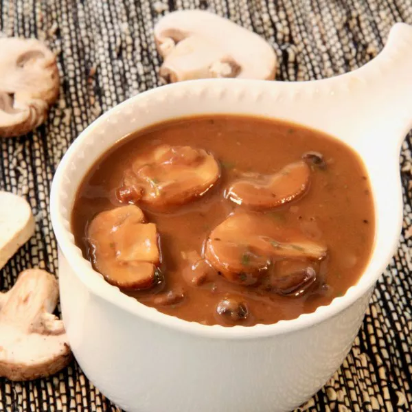

Vegetarian Mushroom Gravy

Description
This gravy is sure to please any vegetarian or even non-vegetarian.
It's flavorful, rich, and is as good on turkey or prime rib as it is on a vegetarian meatloaf or mashed potatoes.
It can be made in advance, stored in the fridge, and reheated on the stovetop or in the microwave.
Ingredients
- 5 tablespoons unsalted butter, divided
- 3 tablespoons shallot, minced
- 12 ounces baby bella mushrooms, sliced
- 2 cloves garlic, minced
- 1/2 teaspoon salt
- 1/2 teaspoon ground black pepper
- 1/3 cup sherry
- 1/4 cup all purpose flour
- 3 cups vegetable broth
- 1 1/2 teaspoons dried terragon
- 3 teaspoons low-sodium soy sauce